Ch.02 小萬隆
搶先看 →
「萬隆有多小？大概就是五分鐘路程可以完成日常瑣事，但基本沒什麼能挑三揀四，這般的大小。」
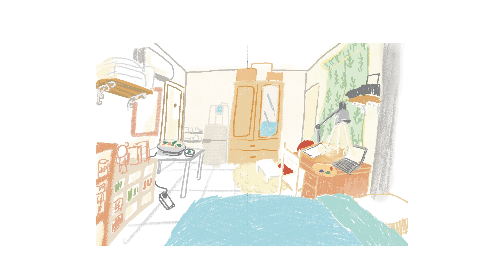
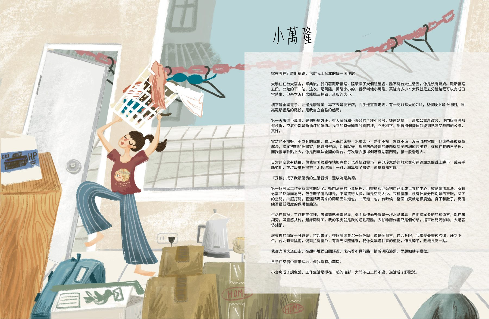
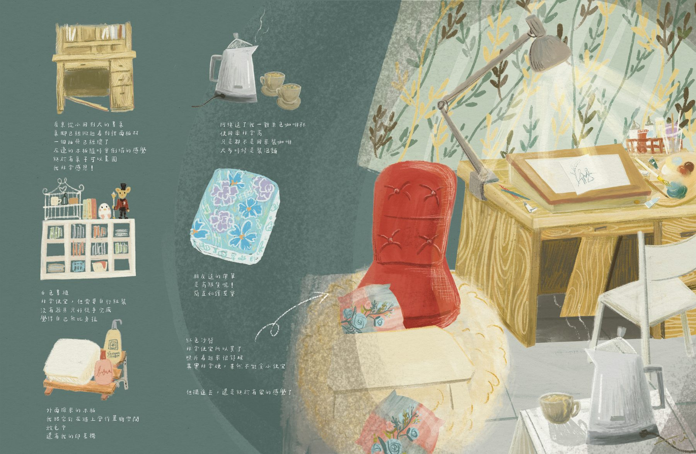
羅斯福路五段，公館的下一站，是萬隆。
萬隆小小的，我都叫他小萬隆。
一個剛畢業的插畫家，帶著一台爸爸買的蘋果筆電，住進捷運站樓上的七坪小套房。用泡麵和書櫃把自己圍成世界的中心，在灰翳中畫筆探地。
這本書記錄了那些年——陽台淹水的夜晚、被鎖在門外的跨年、一包泡麵分三餐的日子、半夜收到一隻海豚的感動，以及在羅斯福路上，一路跑向家的故事。
「小套房成了調色盤，工作生活是攪在一起的油彩，
大門不出二門不邁，遂活成了野獸派。」
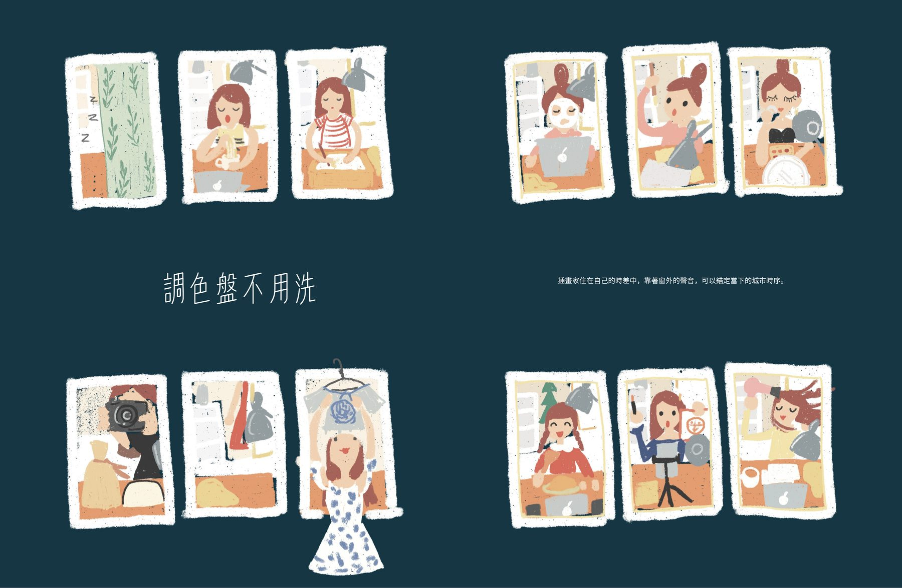
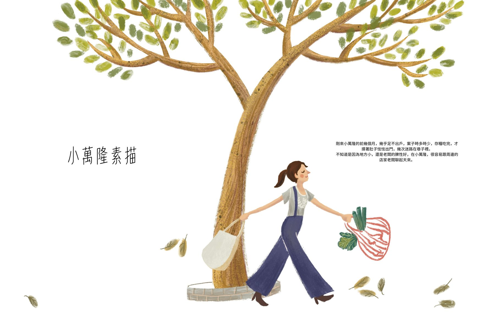
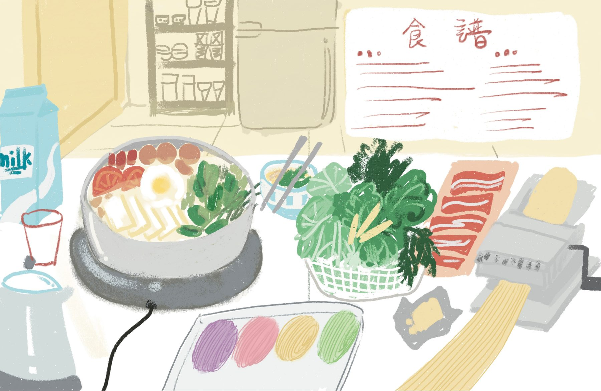
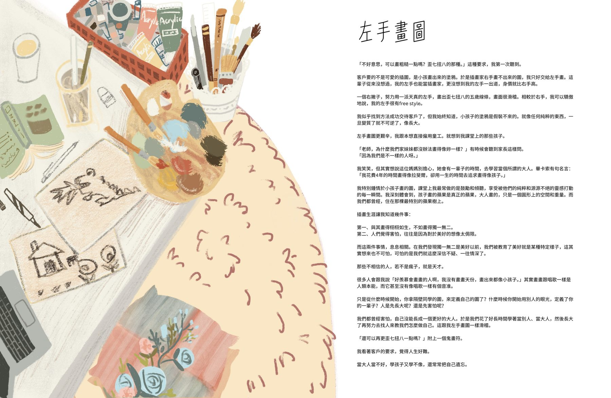
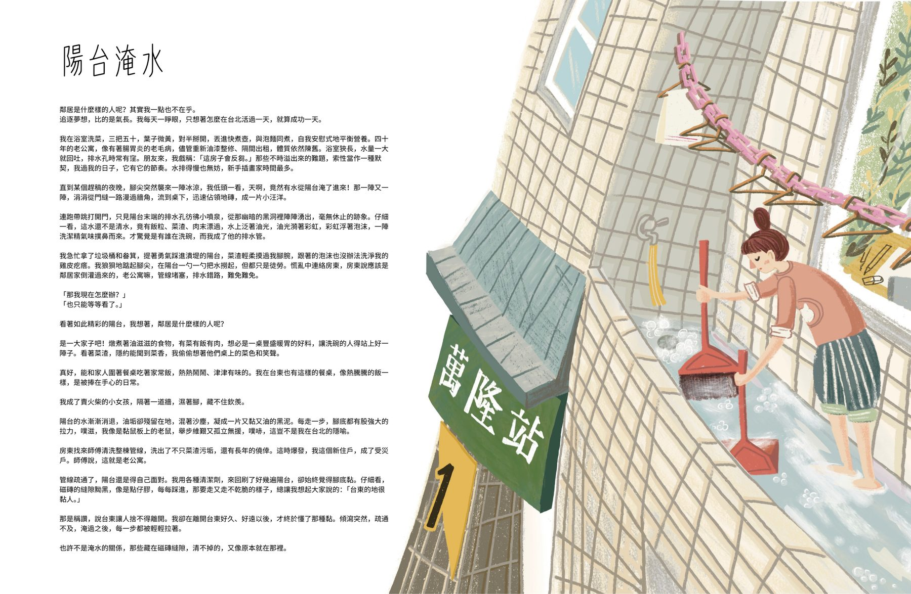
一本書的誕生，就像煮一鍋好湯——急不得，但每天都在變好喝。
文字稿撰寫・章節編排・約 3 萬字初稿完成
✓ 初稿完成 2017 — 2026 春投稿出版社・洽談合作方向・確認出版規格
● 進行中 2026 春30-40 幅全書插圖・電腦繪圖 & 水彩手繪
預計 2026 年 8 月完成文字校潤・圖文跨頁/並置排版・封面定稿
等待中打樣・軟精裝全彩印刷・裝訂・上市
等待中20 個故事，從搬進小萬隆到搬離小萬隆。持續增加中。
每隔一段時間，會從書裡掉出一些碎片給你。
「萬隆有多小？大概就是五分鐘路程可以完成日常瑣事，但基本沒什麼能挑三揀四，這般的大小。」
「插畫家的調色盤是世界上最小的城市，顏色們是街坊鄰居，有時候跟隔壁串串門子，有時候跟對街搞搞曖昧。」
我成了賣火柴的小女孩，隔著一道牆，濕著腳，藏不住欽羨。
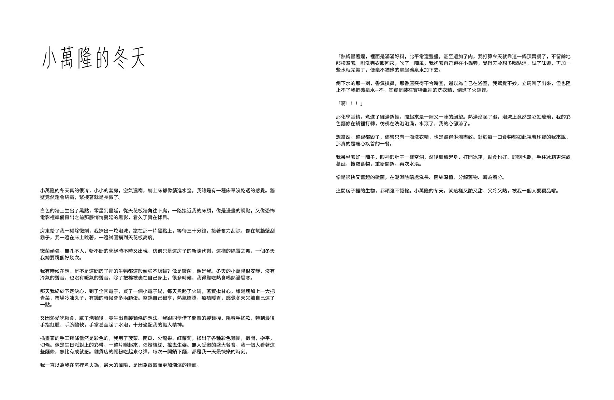
這間房子裡的生物，都頑強不認輸。像是黴菌，像是我。
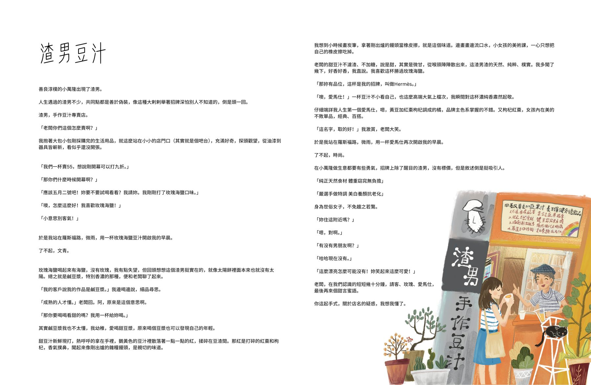
請客、玫瑰、愛馬仕，最後再來個甜言蜜語。你這起手式，關於店名的疑惑，我想我懂了。
萬隆小小的，小的所有美好都在身邊。小插畫家住在小萬隆，感覺也剛剛好。
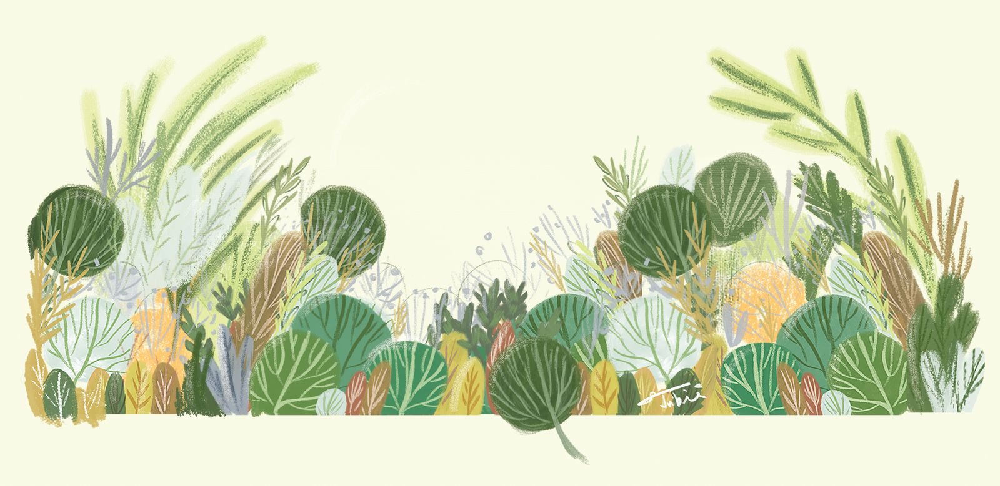
「在無人知曉的深海，是這些故事，
海豚躍水，一次又一次，
把我托舉破浪，看見陽光。」
在書誕生之前，我們可以先在社群上當朋友。
以下是三個階段的宣傳規劃，跟著書的製作進程同步推進。
找出版社 → 確認合作
先讓大家認識這條羅斯福路的尾巴，建立角色感和共鳴。
用限動分享書的即時動態——投稿出版社的心情、收到回覆的瞬間、整理文稿的桌面、畫草圖的過程。輕鬆隨性，讓大家像朋友一樣跟著書的進度。
把這個網頁上的「產書日記」同步發到臉書和 Threads，讓沒有追蹤網頁的人也能跟上進度。書的每一步成長，都值得被記錄和分享。
在這個頁面不定期更新書的進展、心情、幕後故事。讓追蹤的人可以一直回來看看書長大了沒。
確認出版 → 插畫完稿（預計至 8 月）
讓大家參與書的誕生過程，從旁觀者變成共創者。
定期分享插畫繪製過程——草稿→線稿→上色。IG Story 做成「調色盤日記」，每天的調色盤就是今天的心情色票。
放出兩個版本的插圖配色或構圖，讓讀者投票參與。「這碗泡麵要紅色碗還是藍色碗？」讓大家對書產生歸屬感。
「畫了三小時的陽台淹水結果自己把水彩打翻了，這算不算行為藝術？」創作過程的幽默即時分享。
邀請大家分享自己的「小萬隆」——你人生中那個又小又破但很珍貴的起點。可以是租屋處、第一間辦公室、打工的小店、通勤的那條路。說不定你會發現，原來我們都住過同一種房間。
編輯排版 → 印刷上市
倒數計時，把期待推到最高。
封面從概念到定稿的完整過程。最後一張放定稿，做成翻頁效果的 carousel。一口氣看完整個封面的成長。
每月公開一個完整章節（圖＋文），限時 72 小時閱讀。營造稀缺感，錯過的人會更想買書。
手繪明信片組（書中場景）、作者簽名版、限量調色盤造型書籤。預購附贈「小萬隆居民證」——歡迎入住羅斯福路的尾巴。
新書到貨那天做開箱直播——「羅斯福路的尾巴出生了！」邀請讀者一起見證第一刷的模樣。搭配異業合作：書店/咖啡廳/生活選品店快閃展覽。
書的成長紀錄，不定期更新。
二十個故事，從家具清單到我們的家，從搬進小萬隆到搬離小萬隆。像是把散落一地的回憶，終於收進了一個資料夾。看著目錄，覺得這幾年的日子還真是精彩（又荒謬）。
書還沒生出來，就開始想怎麼幫它辦滿月酒了。想讓大家可以跟著這本書一起長大。就像那些年在小萬隆，很多故事都是先有了人，才慢慢長出了形狀。
這本書終於有了自己的名字——《羅斯福路的尾巴》。新手插畫家的小萬隆生存日記。提案書寫好了，附上圖文概念試排樣稿，準備開始投出版社。把二十幾個故事濃縮成四頁的提案書，比寫故事本身還難，好像在幫書穿上它的第一套正裝，要去面試了。加油。
更多日記，慢慢寫⋯⋯
留下你的 email，書有新進度我第一個告訴你。
（就像那年在樓梯間等天亮，這次換你等書出生。）
放心，不會像萬隆的熱炒店一樣吵，只在重要時刻才寄信。